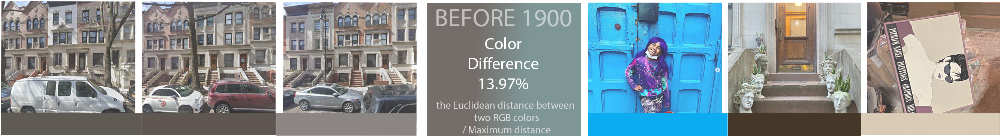
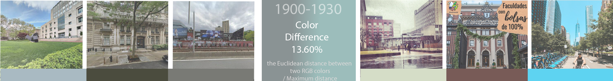
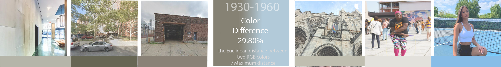
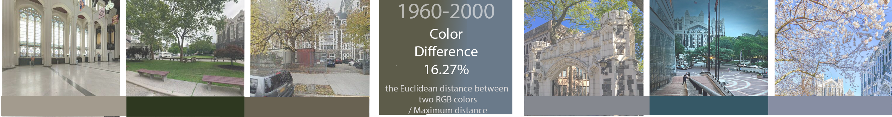
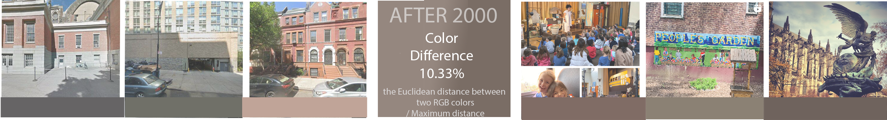
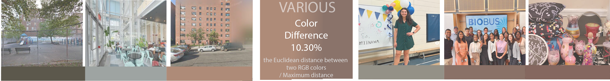

Time - Space - Color
Columbia GSAPP M.S. Computational Design Practices 2024 Summer
Siqi Zhang Student Work Colloquium I
     
Before 1900
1900-1930
1930-1960
1960-2000
After 2000
Complete Map
Before 1900
1900-1930
1930-1960
1960-2000
After 2000
Space - Color
Time - Color
Continue